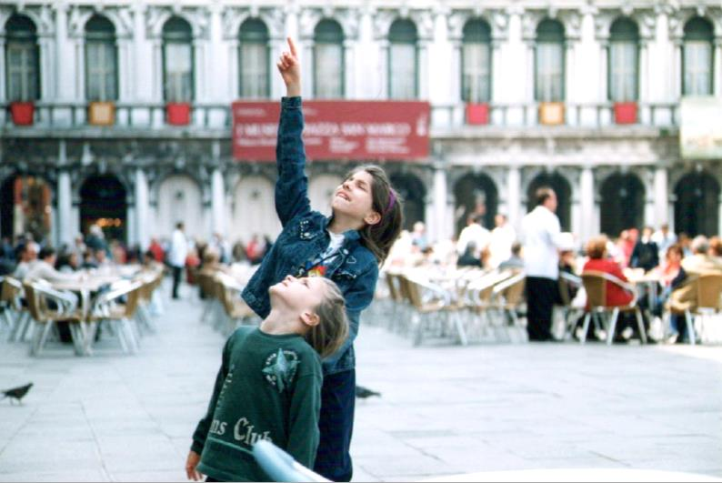

Min me-sida i kursen javascript1
Jag heter Elisa, 26-årig uppsalabo. Jag har alltid varit intresserad av datorer och teknologi, men valde att plugga humaniora (geografi, historia, språk) efter gymnasiet, som jag tyckte var lite tråkigt. Då började jag plugga statistik och dataanalys och tyckte det var intressant, men inte riktigt min grej. Så sökte jag till webbprogrammering på BTH och kom in, och jag älskar det! Just nu är väldigt nyfiken och lite rädd på JS. När jag inte pluggar eller jobbar, då brukar jag spela brädspel, läsa för att finslipa min kass grammatik, bada bastu, promenera (och gå vilse) i skogen och lyssna på olika podcast. Just nu gillar jag Choiceology och Reply All.
